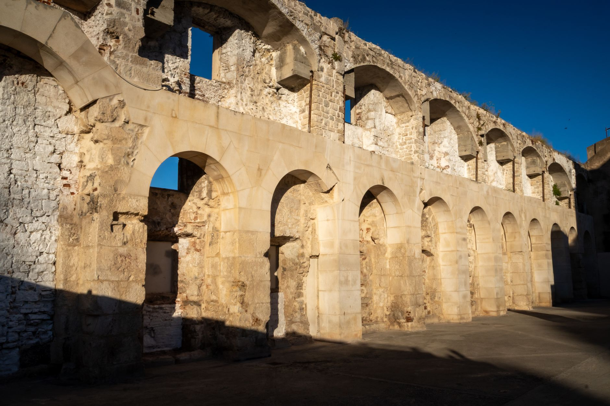
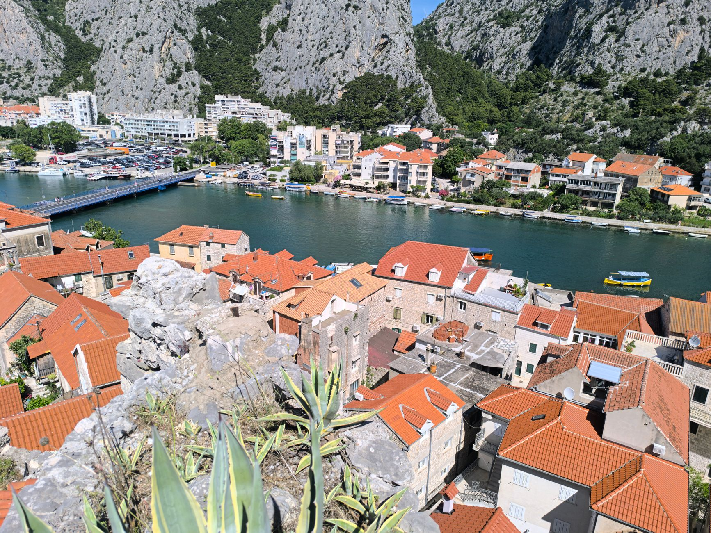
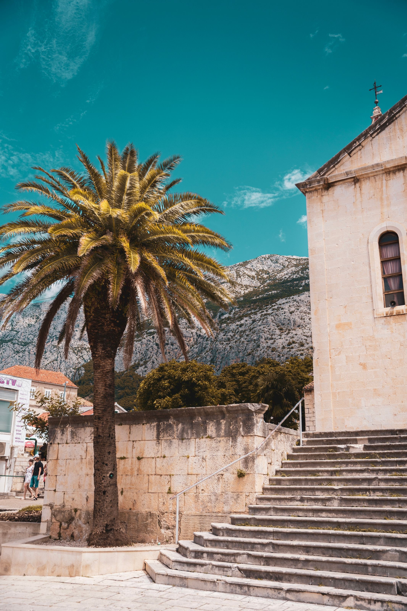
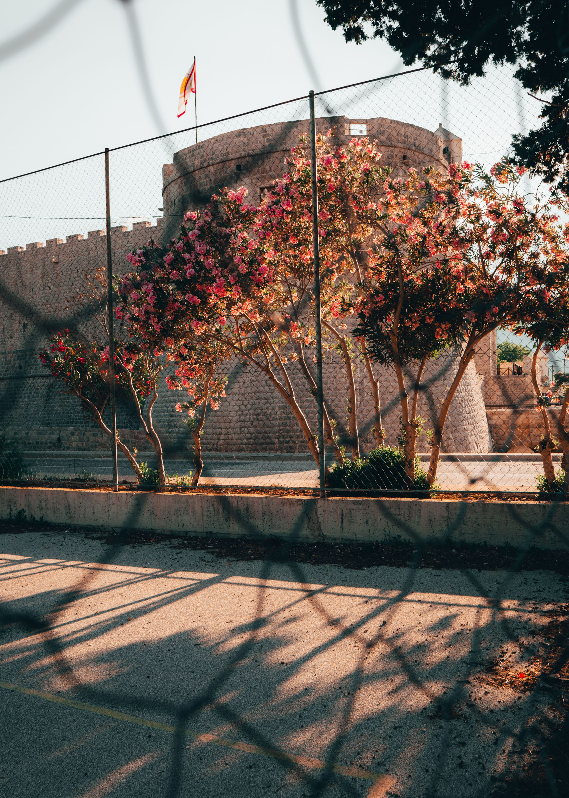
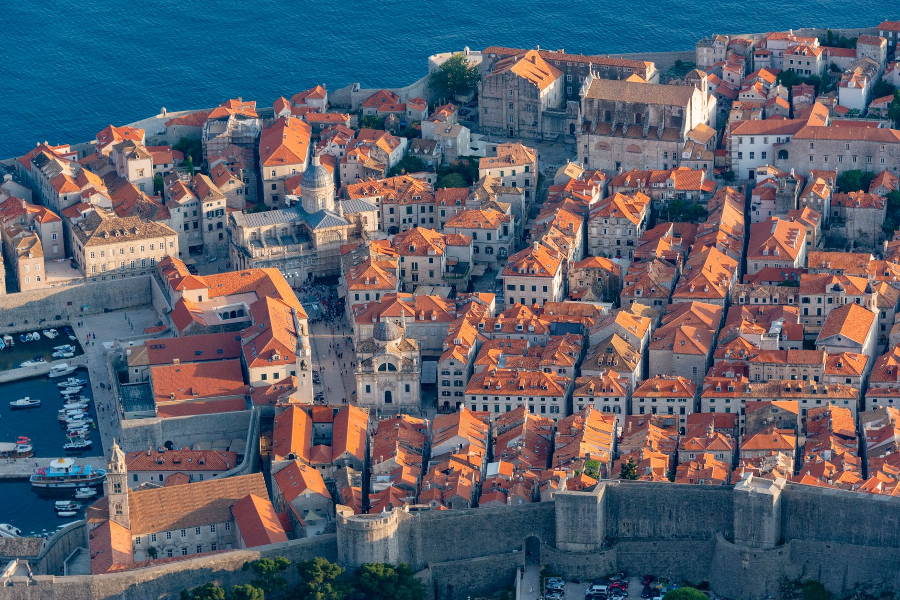

Photo: Diego F. Parra / Pexels
The coastal road south from Split, the D8, runs close enough to the water for most of its length that the drive itself is the attraction, not just the way between towns. This route covers five real stops along it: Split, Omiš, Makarska, Ston and Dubrovnik.
A car is the practical way to do this stretch. Buses run the same road but stop only in the larger towns, and the smaller places along the way, where the coast is often quietest, aren't really reachable without one.
-

SplitThe route starts inside Diocletian's Roman palace walls, a 4th-century structure that's still the core of the living city. -

OmišSqueezed between limestone cliffs and the mouth of the Cetina river, once a base for Adriatic pirates who used the gorge to disappear inland. -

MakarskaPebble beaches directly under the Biokovo mountain range, which rises steeply enough to be visible from nearly every point in town. -

Ston5.5 km of 14th-century walls, built to guard the salt pans below, once the second-longest fortified wall system in Europe after the Great Wall of China. -

DubrovnikThe walled old town at the end of the coastal road, a UNESCO World Heritage Site since 1979.
Stop photos: Ken Jacobsen, Dejana Popovici, Patrik Balažinec, Artūras Kokorevas, Diego F. Parra / Pexels
Ston is worth more than a photo stop. The walk along the walls is open to the public, and the salt pans below have been worked continuously since Roman times.
Good to know before you drive it
- Until 2022, driving this coast meant crossing briefly into Bosnia and Herzegovina at Neum, since a short strip of Bosnian coastline splits Croatia in two here. The Pelješac Bridge, opened in July 2022, lets you bypass that crossing entirely on the way to Ston and Dubrovnik, no passport check needed.
- Croatia's speed limits: 50 km/h in towns, 90 km/h on the open road, 110 km/h on expressways, 130 km/h on motorways. Radar enforcement is common on the coastal D8.
- The D8 narrows to two lanes for long stretches, with tour buses and cyclists sharing the same road in summer. Traffic can back up badly in July and August, especially around Omiš.
- 253 km end to end sounds short, but the road's curves and the town stops make it a full day at a relaxed pace, not a quick transit.
Ready to book this drive? This route runs 253 km and about 4.5 hours behind the wheel, entirely inside Auto Europe's coverage area.
We book through Auto Europe. It compares Hertz, Sixt and the other major agencies in one search, with cross-border and one-way terms visible before checkout instead of buried in each company's own fine print.
Compare car rental prices →This is an affiliate link. Booking through it may earn Travel Gap a commission at no extra cost to you.
Read the full Europe road trip planning guide for what to check before you book anywhere on the continent.